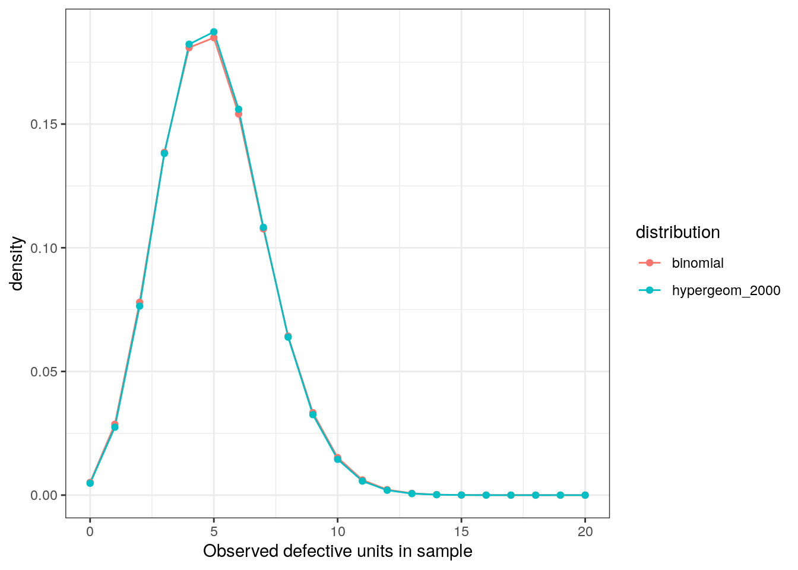
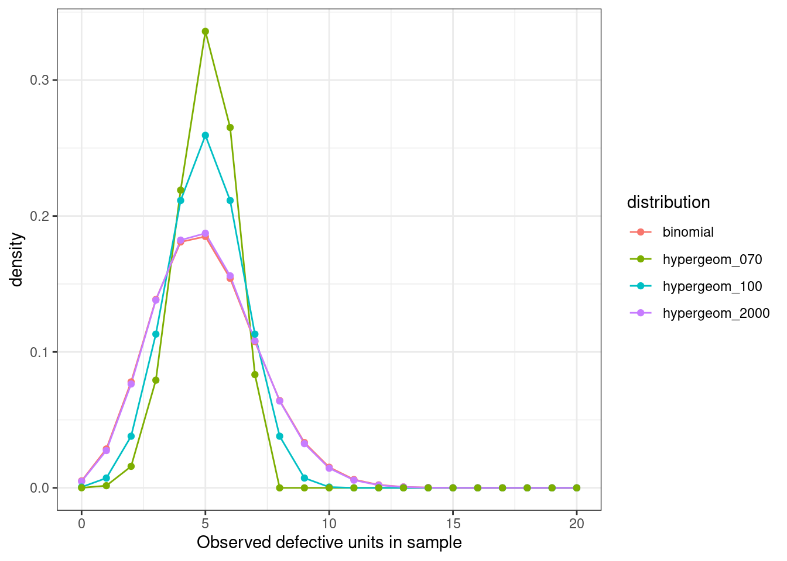

library(tidyverse)We have a manufacturing process in the day job that is subject to sample auditing.
There are \(N\) widgets produced and we need to audit \(n\) of them. Some sort of rejection threshold is needed on that sample to decide if the whole batch of widgets has met a specified quality level.
Typically, a binomial distribution would be appropriate for measuring the probability of \(k\) successes (in this case defects found) in \(n\) independent trials with probability \(p\).
\[ Pr(X=k) = {n \choose k} p^k(1-p)^{n-k} \]
The word independent is doing a lot of work here as it implies that we are sampling with replacement in order to maintain a fixed probability parameter \(p\).
In cases where you are taking draws from a population without replacement (such as when you do destructive inspections on a widget) the underlying population changes with each draw and so does the probability \(p\).
In this case, modelling the process using a hypergeometric distribution may be a more appropriate choice.
\[ Pr(X=k) = \frac{{K \choose k}{N-K \choose n-k}}{{N \choose n}} \]
It similarly describes the probability of \(k\) successes in \(n\) draws without replacement. However, instead of specifying a parameter \(p\), we provide the population size \(N\), which contains \(K\) success states in the population.
Example
Let’s say we have 2000 widgets manufactured and we want to sample 50 (ignore why 50, that is a whole separate question). We have an assumed quality level of 10% defective units (which we define as ‘success’ for complicated reasons).
Q: Based on a sample of 50 widgets how many defective units would be considered unlikely (95% CI) to occur randomly given our assumed quality level, and therefore result in us rejecting the entire batch?
We can compare the binomial probability mass function with the hypergeometric and observe they are essentially the same.
tibble(
x = seq.int(0, 50, by = 1),
binomial = dbinom(x, size = 50, prob = 0.1),
hypergeom_2000 = dhyper(x, m = 200, n = 1800, k = 50),
) |>
pivot_longer(cols = -1, names_to = 'distribution', values_to = 'density') |>
ggplot(aes(x, density, col = distribution)) +
geom_line() +
geom_point() +
xlim(c(0, 20)) +
theme_bw() +
labs(x = "Observed defective units in sample")
However, if we had a smaller population of say 100 or 70 widgets, how would this compare?
tibble(
x = seq.int(0, 50, by = 1),
binomial = dbinom(x, size = 50, prob = 0.1),
hypergeom_2000 = dhyper(x, m = 200, n = 1800, k = 50),
hypergeom_100 = dhyper(x, m = 10, n = 90, k = 50),
hypergeom_070 = dhyper(x, m = 7, n = 63, k = 50)
) |>
pivot_longer(cols = -1, names_to = 'distribution', values_to = 'density') |>
ggplot(aes(x, density, col = distribution)) +
geom_line() +
geom_point() +
xlim(c(0, 20)) +
theme_bw() +
labs(x = "Observed defective units in sample")
We can see these curves are markedly different. And indeed the 95% confidence intervals obtained are narrower for the hypergeometric case.
qbinom(p = c(0.025, 0.975), size = 50, prob = 0.1)[1] 1 9qhyper(p = c(0.025, 0.975), m = 10, n = 90, k = 50)[1] 2 8We can see from a random draw of 1 million samples from each PMF that they both have the same expected values, but the variance is smaller in the hypergeometric case.
X <- rbinom(n = 1e6, size = 50, prob = 0.1)
Y <- rhyper(nn = 1e6, m = 10, n = 90, k = 50)
mean(X)[1] 5.003297var(X)[1] 4.503315mean(Y)[1] 5.000162var(Y)[1] 2.27195Does it matter which one you use?
As a consequence of removing samples in each draw we influence the probability of a subsequent success. If our \(N\) and \(K\) is very large relative to our sample \(n\) this wont make much of an impact, but it can be impactful for smaller populations, or relatively larger samples.
From our example above, failing to use a hypergeometric distribution to model this process for smaller populations will result in wider, more conservative acceptance regions which can increase consumer risk in a manufacturing process.
Typical guidance on when to use each distribution is given in manufacturing standards such as AS 1199.1-2003: Sampling Procedures for Inspection by Attributes and typically involves how you structure your sampling scheme.